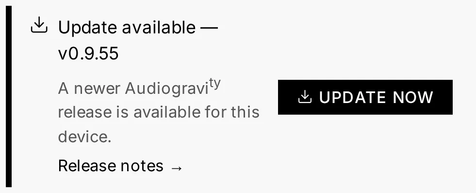

8. Updating
Audiogravity updates itself from the browser — no terminal, no re-running scripts.
One-click self-update
When a newer release is available, the Admin page shows an update banner with the new version, a release-notes link, and a required badge if the update is critical. You don't need the page open to notice: the Admin tab itself carries a small download marker whenever an update is waiting — in the warning colour when it is required.

Installing it is one action:
- A short confirmation (playback briefly stops) and your admin password.
- The box downloads the new version, swaps the binary, and health-checks that it comes back up on the right version.
- Live progress the whole way — downloading → installing → verifying — even across the service restart.
On an all-in-one box, the same click updates the core and the interface together, so everything lands on the new version at once.
Safety: automatic rollback
If anything goes wrong, the box automatically rolls back to the previous version and tells you — you're never left on a broken update. The updater runs detached from the app, so it survives the restart it triggers. There's no OS reboot; only a brief pause while the audio service restarts.
Split installs (different hosts)
One-click self-update covers a co-located core + ui. If your core and interface run on different hosts, update each side separately (see below) — the one-click action updates the box it runs on.
Manual update
You can always update by re-running the installer; your configuration is preserved —
both .env and the editable files under /etc/audiogravity (the audio setup, the
signal-chain map, and your saved radio stations). A fresh install seeds those files
with sensible defaults; an upgrade never overwrites them, so your edits survive:
curl -fsSL https://audiogravity.app/install.sh | sudo bash -s -- --token ghp_xxx
Version-mismatch banner
If the interface and the core end up on different versions (for example after a partial or multi-host update), a banner appears in the Admin tab prompting you to update the other component. It's silent when the two match.
Backup & restore
Everything that makes your box yours lives in a handful of files. Copy them before an OS reinstall (or on a schedule) and you can rebuild the box in minutes:
| What | Where |
|---|---|
| Audio setup — services & profiles registry, hi-fi chain map, saved radio stations | /etc/audiogravity/ (audio-config.json, audio-topology.json, radio.json) |
| Your licence and its public key | /etc/audiogravity/audiogravity.lic, license.pub |
| Accounts — users, roles, password hashes, passkeys | /opt/audiogravity/core/users.json |
| Core runtime config — API key, security secrets, enabled modules | /opt/audiogravity/core/.env |
The simplest habit — grab everything in one archive:
sudo tar -czf ag-backup-$(hostname)-$(date +%F).tar.gz \
/etc/audiogravity \
/var/backups/audiogravity \
/opt/audiogravity/core/users.json \
/opt/audiogravity/core/.env
Restore on a fresh install: run the installer first
(see 2. Installation), then unpack the archive over the new
files (sudo tar -xzf ag-backup-….tar.gz -C /) and restart the core
(sudo systemctl restart ag-core-server). Service config files regenerate through
the guided setup, and streaming-service logins are simply re-entered in
Library → Sources. Your music itself lives on the NAS/USB drive — it is never
stored on the box.
Editor-level backups (the timestamped copies the Config editor keeps before every save) live under
/var/backups/audiogravity— that's why the archive above includes it.